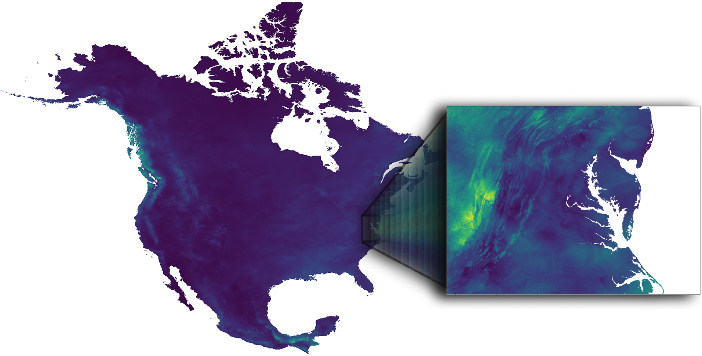
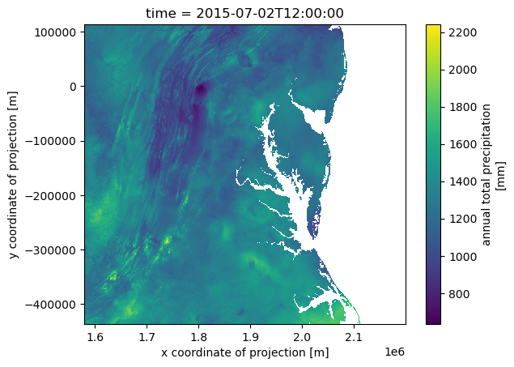

Access Precipitation data from DAYMET#

This dataset provides annual climate summaries derived from Daymet Version 4 R1 daily data at a 1 km x 1 km spatial resolution for five Daymet variables: minimum and maximum temperature, precipitation, vapor pressure, and snow water equivalent. Annual averages are provided for minimum and maximum temperature, vapor pressure, and snow water equivalent, and annual totals are provided for the precipitation variable. The annual climatology files are derived from the larger datasets of daily weather parameters produced on a 1 km x 1 km grid for North America (including Canada, the United States, and Mexico), Hawaii, and Puerto Rico. Separate annual files are provided for the land areas of continental North America, Hawaii, and Puerto Rico. Source: NASA Earthdata.
Requirements#
EDL authentication (username/password)
Objectives#
Subset a remote file#
a) By Variables
b) By Spatial selection
Subset multiple remote files#
Stream subset of data
References#
Thornton, M. M., Shrestha, R., Wei, Y., Thornton, P. E., & Kao, S.-C. (2022). Daymet: Annual Climate Summaries on a 1-km Grid for North America, Version 4 R1 (Version 4.1). ORNL Distributed Active Archive Center. https://doi.org/10.3334/ORNLDAAC/2130
import xarray as xr
import datetime as dt
import earthaccess
import numpy as np
# import pydap-specific tools
from pydap.client import get_cmr_urls, open_url
from pydap.client import to_netcdf as dap_to_netcdf
EDL Authentication via earthaccess and OPeNDAP#
You can authenticate via earthaccess as demonstrated below. You must have a valid EDL account. There are two strategies for authenticating with earthaccess:
strategy="interactive". This will promt your edl username-password.strategy="netrc". Use this if the notebook is running on an environment where a.netrcwith your credentials is recoverable. T
Below the default will be netrc, assuming the user has executed the notebook Authenticate.ipynb. If not, you can change the strategy to "interactive".
from earthaccess.exceptions import LoginStrategyUnavailable
try:
auth = earthaccess.login(strategy="netrc", persist=True) # you will be promted to add your EDL credentials
except LoginStrategyUnavailable:
auth = earthaccess.login(strategy="interactive", persist=True)
# pass Token Authorization to a new Session.
my_session = session=auth.get_session()
Finding OPeNDAP URLs#
Query opendap urls using NASA’s CMR API#
Must include:
Concept collection ID of interest.
Time range of interest (to filter from all possible results)
daymet_ccid = "C2531982907-ORNL_CLOUD" #
time_range = [dt.datetime(2014, 5, 15), dt.datetime(2024, 5, 15)]
cmr_urls = get_cmr_urls(ccid=daymet_ccid, time_range=time_range, limit=1000) # you can incread the limit of results
print("################################################ \n We found a total of ", len(cmr_urls), "OPeNDAP URLS!!!\n################################################")
################################################
We found a total of 165 OPeNDAP URLS!!!
################################################
Further filtering#
The CMR returns all precipitation URLs from DAYMET. However, these are furthern split into three regions:
Hawaii
Puerto Rico
North America (Continental US).
We need to further filter these opendap urls to only retain variables of interest. In this tutorial we are only interested in: Continental US we then need to select only the URLs ending with
Daymet_Annual_V4R1.daymet_v4_prcp_annttl_na_
# filter url to only retain Annual Precip for North America
prcp_na_urls = [url for url in cmr_urls if url.split(".nc")[0].split("Daymet_Annual_V4R1.daymet_v4_")[-1].startswith("prcp_annttl_na")]
prcp_na_urls[:5]
['https://opendap.earthdata.nasa.gov/collections/C2531982907-ORNL_CLOUD/granules/Daymet_Annual_V4R1.daymet_v4_prcp_annttl_na_2014.nc',
'https://opendap.earthdata.nasa.gov/collections/C2531982907-ORNL_CLOUD/granules/Daymet_Annual_V4R1.daymet_v4_prcp_annttl_na_2015.nc',
'https://opendap.earthdata.nasa.gov/collections/C2531982907-ORNL_CLOUD/granules/Daymet_Annual_V4R1.daymet_v4_prcp_annttl_na_2016.nc',
'https://opendap.earthdata.nasa.gov/collections/C2531982907-ORNL_CLOUD/granules/Daymet_Annual_V4R1.daymet_v4_prcp_annttl_na_2017.nc',
'https://opendap.earthdata.nasa.gov/collections/C2531982907-ORNL_CLOUD/granules/Daymet_Annual_V4R1.daymet_v4_prcp_annttl_na_2018.nc']
Accessing Metadata-ONLY with PyDAP#
We can access OPeNDAP-produced metadata to identify the variables of interest. In particular those associated with latitude and longitude values
pyds = open_url(prcp_na_urls[0], protocol="dap4", session=my_session, batch=True)
pyds.tree()
.daymet_v4_prcp_annttl_na_2014.nc
├──y
├──lon
├──x
├──time
├──lat
├──prcp
├──time_bnds
└──lambert_conformal_conic
Spatial Subset#
WE are interested in a geographical area centered around MidAtlantic (US), defined by the bounding box
bounding-box = [36.5, -80.3, 40.5, -74] # Follows the format: [South, West, North, East]
lon_min, lon_max = -80.3, -74
lat_min, lat_max = 36.5, 40.5
Use PyDAP download data from One file#
In the present case of Level 3 data, to identify the subset that defined our area of interest, it is sufficient to download the coordinate data from a single remote file. Below we use PyDAP to do that.
%time
lon = pyds['lon'][:].data
lat = pyds["lat"][:].data
CPU times: user 2 μs, sys: 1 μs, total: 3 μs
Wall time: 5.25 μs
%%time
lon, lat = np.asarray(lon), np.asarray(lat)
CPU times: user 8.61 s, sys: 3.87 s, total: 12.5 s
Wall time: 1min 58s
print("######################################## \n longitude array size:", lon.shape, "\n ########################################")
########################################
longitude array size: (8075, 7814)
########################################
print("######################################## \n latitude array size:", lat.shape, "\n ########################################")
########################################
latitude array size: (8075, 7814)
########################################
Find the indexes that define the area of interest#
# 1) points that fall inside your lat/lon box
mask = (
(lon >= lon_min) & (lon <= lon_max) &
(lat >= lat_min) & (lat <= lat_max)
)
rows, cols = np.where(mask)
# indexes below
y0, y1 = rows.min(), rows.max()
x0, x1 = cols.min(), cols.max()
Double check these values are reasonable#
print(f"#################################################################################### \n Data download will span longitude values: [{lon[y0:y1,x0:x1].ravel().min()}" + ", " + f"{lon[y0:y1,x0:x1].ravel().max()}] \n####################################################################################" )
####################################################################################
Data download will span longitude values: [-81.41896057128906, -72.49678802490234]
####################################################################################
print(f"#################################################################################### \n Data download will span latitude values: [{lat[y0:y1,x0:x1].ravel().min()}" + ", " + f"{lat[y0:y1,x0:x1].ravel().max()}] \n ####################################################################################" )
####################################################################################
Data download will span latitude values: [35.210548400878906, 41.76029968261719]
####################################################################################
Define pydap-specific parameters#
These are needed to:
Subset close to remote data (so only data of interest is downloaded)
Define where to store data in local environment
By default, if no parameter is defined, it will download the entire data and place it in the current directory
dim_slices = {'/y':(y0,y1), '/x': (x0,x1)} # defines index to subset format: (first, last)
keep_vars = ["/time", "/y", "/x", "/lon", "/lat", "/prcp"] # variables to download
output_path = "data"
Stream and deserialize data#
Pydap will store each remote file into is own individual file (each file will have the same name as that of the source file), instead of aggregating all the data. This is considerable safer (since not all data can be aggregated into single datacube), and enables parallelism.
%%time
dap_to_netcdf(prcp_na_urls, session=my_session, output_path = output_path, dim_slices=dim_slices, keep_variables=keep_vars)
CPU times: user 59.5 ms, sys: 123 ms, total: 182 ms
Wall time: 17.5 s
Inspect data locally#
Once in your local system, you can aggregate the files if needed. In this case all data can be aggregated and is considerable much easier to aggregate these locally, than remotely.
%%time
ds = xr.open_mfdataset("data/daymet_v4_prcp_annttl_na*", parallel=True, concat_dim='time', combine='nested')
CPU times: user 462 ms, sys: 176 ms, total: 638 ms
Wall time: 684 ms
ds['prcp'].isel(time=1).plot()
<matplotlib.collections.QuadMesh at 0x12bde6a50>
